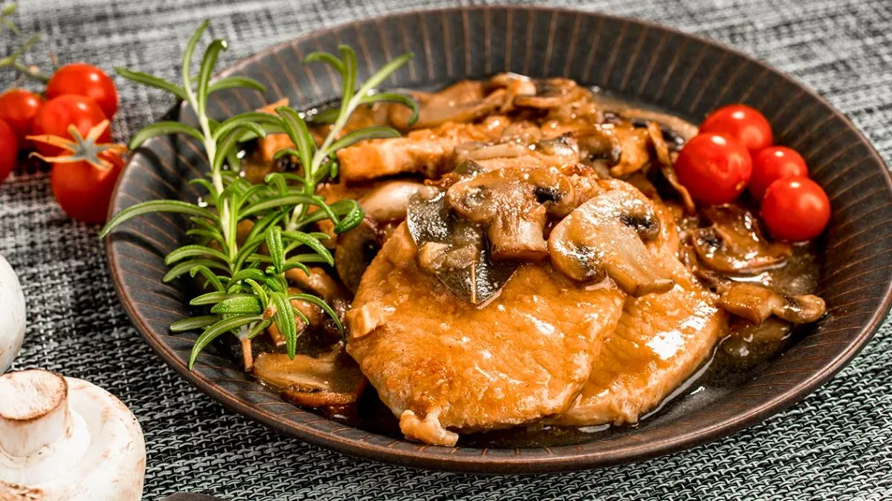

El protagonista de la mesa
Hoy vamos a preparar un plato principal lomo al champiñón con papas españolas. Jugoso, tierno y con una salsa cremosa que envuelve todo con un aroma espectacular. Acompañado de papas doradas, es una combinación que nunca falla, ideal para una cena especial, para agasajar a alguien querido o simplemente para darte ese gusto que te merecés. Así que prendé la hornalla, prepará tus ingredientes y dejate llevar por esta receta que convierte cualquier comida en un momento memorable.

Ingredientes
- 1 pieza de Lomo.
- 200 gms de champiñones cortados en cuartos.
- 1/2 cebolla muy picada.
- 2 dientes de ajo picado.
- 1 vaso de vino blanco.
- 1 cucharada de salsa inglesa.
- 50 gms de manteca.
- 1 cucharada de aceite.
- Sal, pimienta.
- 1 kilos de papas.
Ahora a preparar
Primera parte
- Limpiar el lomo de grasas y tejidos.Cortar en medallones de 2 dedos de espesor.
- En una sartén con aceite y manteca rehogar cebolla y ajo y sellar los champiñones. Retirar y reservar.
- En el mismo recipiente de cocción a temperatura más fuerte sellar por ambos lados los medallones de carne. Rociar con salsa inglesa, incorporar el vino blanco y cocinar hasta que evapore el alcohol.
Segunda parte
- Volvemos con los champiñones junto a la cebolla y ajo rehogado, y lo incorporamos a la crema. Cocinar a fuego bajo hasta que tome textura de salsa consistente y servir.
- Acompañar con papas cortadas en rojadas de ,0,5 cm de espesor fritas.
Si necesitas mas ayuda, mira este video y cocina de una manera mas facil!!!